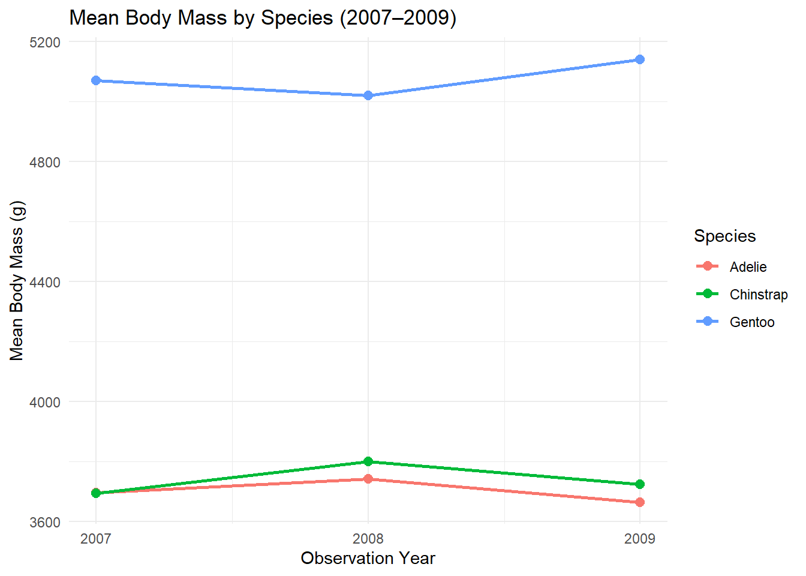

Trends in Penguin Body Mass by Species (2007–2009)
Author
Chloe Surbeck
Published
September 22, 2026
Introduction
We have done a lot of work in DSCI 523 using palmerpenguins dataset. I wanted to see how the body_mass (g) of these penguin species (Adelie, Chinstrap and Gentoo) changed over the year (2007 - 2009).
Data source: Palmer Penguins, Palmer Station Antarctica LTER.
# A tibble: 6 × 8
species island bill_length_mm bill_depth_mm flipper_length_mm body_mass_g
<fct> <fct> <dbl> <dbl> <int> <int>
1 Adelie Torgersen 39.1 18.7 181 3750
2 Adelie Torgersen 39.5 17.4 186 3800
3 Adelie Torgersen 40.3 18 195 3250
4 Adelie Torgersen NA NA NA NA
5 Adelie Torgersen 36.7 19.3 193 3450
6 Adelie Torgersen 39.3 20.6 190 3650
# ℹ 2 more variables: sex <fct>, year <int>
Body Mass Summary by Species
From annual_mass we can observe that Gentoo penguins are the significantly heavier than the other species across all years.
# clean raw penguins data by selecting relevant columns and removing rows with missing values (using drop_na)clean_penguins <- penguins |>select(species, year, body_mass_g) |>drop_na(body_mass_g)# get average mass (using group_by) for species by year, get mean (mean) and round to/display whole numberaverage_mass <- clean_penguins |>group_by(species, year) |>summarize(mean_body_mass_g =round(mean(body_mass_g)), .groups ="drop")# return average-penguin-massaverage_mass
New observations from the average_mass_table: Adelie’s and Chinstrap’s average mass rose from 2007 -> 2008, peaked in 2008 and then fell from 2008 -> 2009. Gentoo didn’t follow this trend, instead falling between 2007 -> 2008 and then rising from 2008 -> 2009 (peaking in 2009).
# pivot wider (using pivot_wider) the year into columnsaverage_mass_table <- average_mass |>pivot_wider(names_from = year, values_from = mean_body_mass_g)# return average_mass_table
New observations (and what they imply) from species_stats: Adelie’s standard deviation (459g) is the lowest of all species, indicating their data set has the least range of recorded weights. Chinstrap have nearly half the observations (68) either other species have (151 and 123); due to the observation count, Chinstrap have slightly smaller confidence intervals than Adelie (whom they share a 50% confidence interval with). Gentoo’s mean (5076g) is higher than the max of the other species (4775g and 4800g), implying that the average Gentoo penguin is more massive than the largest Adelie or Chinstrap.
# for each species get summary statistics using mass, round to 0 decimals and display as whole numberspecies_stats <- clean_penguins |>group_by(species) |>summarize(count =n(),mean =round(mean(body_mass_g)),std =round(sd(body_mass_g)),min =min(body_mass_g),q25 =round(quantile(body_mass_g, 0.25)),median =median(body_mass_g),q75 =round(quantile(body_mass_g, 0.75)),max =max(body_mass_g) )species_stats
# A tibble: 3 × 9
species count mean std min q25 median q75 max
<fct> <int> <dbl> <dbl> <int> <dbl> <dbl> <dbl> <int>
1 Adelie 151 3701 459 2850 3350 3700 4000 4775
2 Chinstrap 68 3733 384 2700 3488 3700 3950 4800
3 Gentoo 123 5076 504 3950 4700 5000 5500 6300
Visualizing Body Mass Trajectories
From the graph we can see that there is a consistent gap in weights between Gentoo’s and Adelie’s/Chinstrap’s. Additionally, each individual species average mass only varies slightly between each year.
# plot average mass over time by species using ggplot2ggplot(average_mass, aes(x = year, y = mean_body_mass_g, color = species, group = species)) +# draw lines connecting points for each speciesgeom_line(linewidth =1) +# add points on each observation yeargeom_point(size =2.5) +# set title and axis labelslabs(title ="Mean Body Mass by Species (2007–2009)",x ="Observation Year",y ="Mean Body Mass (g)",color ="Species" ) +# force observation year to display only whole yearsscale_x_continuous(breaks =c(2007, 2008, 2009)) +# use a clean minimal themetheme_minimal()

average body mass (g) across Palmer Penguin species from 2007-2009.